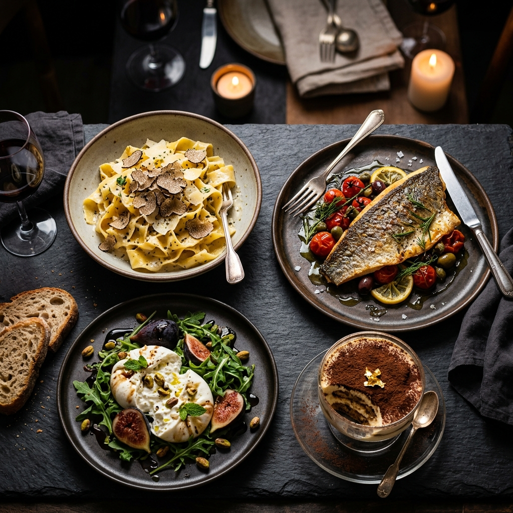

La Dolce Vita
Where candlelight, estate vintages, and handmade pasta turn evenings into rituals.
- Hours
- Tue–Sun · 5–10pm
- Dress
- Elegant casual
- Private
- Up to 30 guests

Crafted with passion, served with memory.
Founded in 1985 by Chef Alessandro Rossi, La Dolce Vita brings the rustic charm of Tuscany to your table.
-
01
The Beginning · 1985
Alessandro left Lucca with a single copper pot and his nonna's recipes. The first dining room sat twelve.
-
02
The Craft
Pasta is still rolled by hand each morning. Sauces simmer from noon. Nothing leaves the pass until it's right.
-
03
Today
Three dining rooms, one wood-fired oven, and a courtyard of herbs — still cooking like it's the first night.
 Est.
Est.1985
- Founded
- 1985
- From
- Lucca, Tuscany
- Seats
- 90 nightly
Signature Delicacies

Tagliatelle al Tartufo
Hand-rolled tagliatelle tossed in black truffle cream, shaved fresh Umbrian truffles, and 24-month aged Parmigiano-Reggiano.

Deconstructed Tiramisu
Espresso-soaked ladyfingers, whipped mascarpone quenelle, dusted cocoa powder, and dark chocolate shards garnished with gold leaf flakes.

The Evening Spread
Every course leaves the pass together — antipasti, primi, secondi, and dolci staged for a single, unhurried seating.
Inside Our Kitchen


They Came Hungry, Left Happy
"The tasting journey was the best meal we've had in a decade. The sommelier pairing alone was worth the trip."
"Candlelit, unhurried, and the pasta was genuinely made that morning. You feel looked after without a hint of fuss."
"We booked the private room for 24. Every dietary need was handled quietly and perfectly. Flawless hosting."
- Condé Nast Traveler
- Michelin Guide
- Eater
- Food & Wine